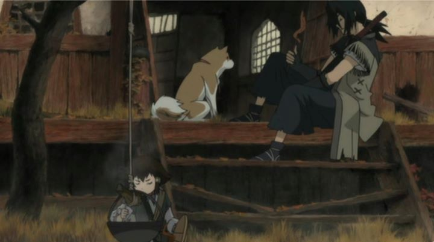

While I talk a lot about animated films (and will do so here in a moment), let's talk briefly about Japanese live-action films. If I bring up the subject, what's the first thing that comes to mind? The film industry in Asia has matured a lot, but still has its roots in martial-arts films, often set in ancient Japan or China, when samurai roamed the land. There is plenty of anime for all sorts of genres, including action, and including samurai action. But few of those have ever been considered as "classics" or "mandatory viewing."The 2007 film "Sword of the Stranger" best fits the bill for that type of movie, second perhaps only to "Ninja Scroll" from over a decade prior. At it's core, the story is simplisitc: set in Feudal Japan, a young boy and his dog escape captors, and the boy hires a renegade swordsman with no master to protect them. The two eventually form a bond on their adventure, climaxing when the reason for the boy's importance is discovered and the samurai fights to the death to protect him. Entire gangs are slain in bloodshed. This should sound familiar as the common archtype for most martial-arts films. But "Sword of the Stranger" does this SO well, despite grounding itself to the same limitations a live-action adaption would have had, that it becomes a classic from a relatively recent time. It's a love-letter to the genre through-and-through.As for the story... the boy's name is Kotaro, the dog's name is Tobimaru, and the mysterious hero is Nanashi. There is a bit of intrigue over why different factions are after Kotaro, and a twist or two from greed or betrayal. The growing bond between Nanashi and Kotaro is enjoyable. It's also mostly predictable, and during slow scenes, a little dull. The visual design looks fine, but lacking in inspiration, and the animation for most of the film doesn't look great. The voice acting is passable (notably, some scenes in the original Japanese includes moments of Chinese acting, true to the characters, and this is kept for the English dub as well). Most of the film ranges from "good" to "ok."Then why should you see it? The same reason you see any martial-arts or samurai movie: the fight scenes! There's a few great scenes in this film, which stands out more thanks to some of the best sword choreography and animated execution I've ever seen in anime. Figures fly and the camera moves with it effortlessly. It's a thing of wonder. Most trailers or random clips of the film online don't showcase this enough, a shame since it's the biggest factor to make "Sword of the Stranger" exceed "see it if you want" to "OMG see it now!" The sound effects and musical score also reaches its high point during these specific scenes. It isn't unusal for Studio Bones to go the extra mile during action but cheap out during the rest... it's a shame the entire film didn't get this treatment, but I'll take what I can get. And while violence is plentiful, the movie doesn't go over-the-top with its blood and carnage like most anime would. For a certain age group, this is a great gateway for even children to get into the genre. Martial-arts and samurai films, that is. Or perhaps animation... ask a ten-year-old what their favourite part of "Sword of the Stranger" is, and you'll know what path they've chosen.
- "Ani" More reviews can be found at : https://2danicritic.github.io/ Previous review: review_Sword_Art_Online Next review: review_Tales_From_Earthsea